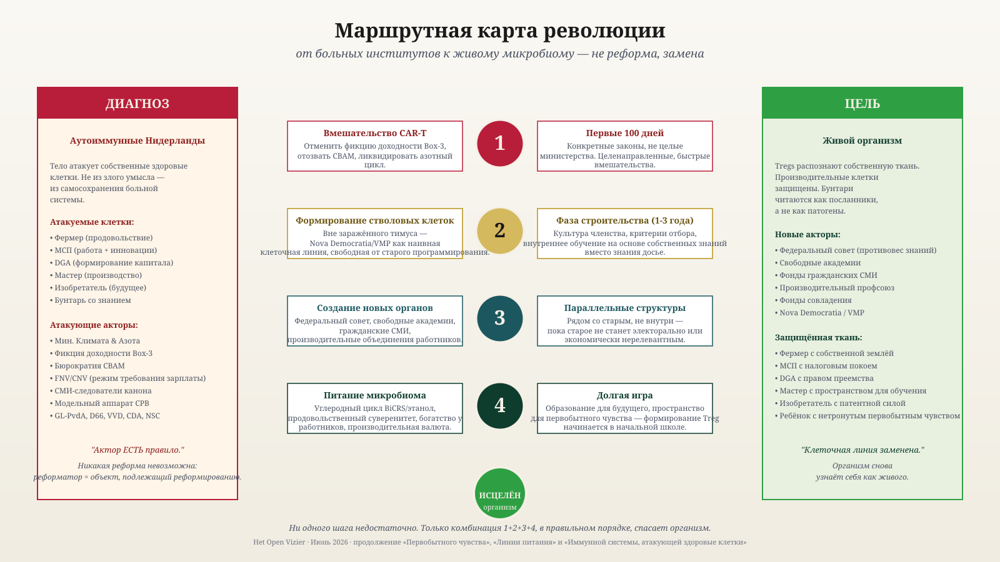

Они убивают свою жизненную артерию
Брюссель и Гаага больны аутоиммунной болезнью. Пациент — Нидерланды.
Якобус ван Мерктейн · 19 июня 2026
Они убивают свою жизненную артерию — производство, которое обеспечивает жителя деньгами.
Никакой риторики. Три сообщения этой недели.
15 июня 2026
Нидерландские фермы демонтируются и заново собираются в Польше, Швеции, Хорватии, Перу и Украине. Именно молодые фермы уходят. Они самые ценные.
16 июня 2026
ESB подсчитало: политика азотных ограничений с выкупом обходится в €212.795 за килограмм. Один килограмм азота в комбикорме стоит €1,50. Политика в 140.000 раз дороже проблемы.
12 июня 2026
Rabobank: добавленная стоимость сельского хозяйства –20% за один год. Искусственные удобрения +26%. Энергия +17%. Кто остаётся — платит больше за меньшее.
Одна неделя. Три сектора одной и той же жертвы.
И фермер не одинок. Директор-собственник: наследование бизнеса облагается налогом до 70%. Box 3: налог на прибыль, которой нет. Промышленность: CBAM вытесняет Tata, Nyrstar и химическую отрасль. Мастер: административное давление и НДС ломают МСП. Брюссель: одобряет ещё больше выкупов, блокирует культивируемое мясо, продавливает CBAM дальше.
Одно руководство. Шесть секторов. Одна закономерность.
У жителя одна жизненная артерия: производство. Именно оттуда берутся деньги на здравоохранение, образование, оборону, пенсии. Нет производства — нет денег, нет общества. Простая арифметика.
Эту артерию сейчас перерезает само руководство, которое живёт за её счёт.
И ради чего? Ради целей 2019 года в климате 2026-го. Растения уже переселились. Граница леса сдвигается на север. Природа движется вперёд. Руководство — нет. Оно выкупает фермеров по расчётным моделям, которые реальность уже опровергла. Это не упрямство. Это клиническая картина болезни.
Почему никто не думает?
Как такое возможно? Образованные люди. Советники. Модели. И всё равно — вот это.
Настоящее мышление требует трёх вещей.
Видеть то, что есть. Больное руководство видит только собственные модели.
Сомневаться в собственных допущениях. В больном руководстве сомнение — это предательство.
Брать на себя ответственность. В больном руководстве ответственность нигде не лежит — это вышло из модели, было прописано в директиве, было обязательным по европейскому праву.
Кто не видит — не сомневается. Кто не сомневается — не решает. Кто не решает — не думает.
Поэтому призывы к «лучшей политике» не работают. Немыслящая система не начнёт думать лучше от того, что её об этом попросят.
Болезнь имеет имя
В медицине это известно. Аутоиммунная болезнь. Тело атакует собственные органы. Поджелудочная железа, суставы, миелин, щитовидная железа, кишечник.
Атакующие клетки не злоумышленники. Они выполняют свою работу. Проблема в распознавании. Собственная ткань принимается за врага.
Иммунная система не может увидеть собственную ошибку. Каждая попытка коррекции воспринимается как угроза и нейтрализуется.
Перечитайте это описание. Замените «тело» на «Нидерланды». Замените «иммунная система» на «Брюссель и Гаага». Подходит слово в слово.
Это не метафора.
Это клиническая картина болезни.
Без лечения это ведёт к смерти — у человека в течение лет, у страны в течение десятилетия.
Почему новый министр ничего не решит
Клеточная линия больна, а не отдельная клетка.
Новый министр приходит из того же университета, той же карьеры, тех же моделей, тех же комиссий. Он не может принять иных решений. Их производит министерство, а не он.
В медицине это давно усвоено: широкая иммуносупрессия — подавление симптомов — делает пациента слабым и зависимым. Исцеление требует иного.
Удалить клеточную линию и сформировать новую.

Пять нарастающих маршрутов лечения — медицинский и политический рядом.
Лечение
Пять медицинских маршрутов. Пять политических переводов.
1 · Подавление симптомов
Субсидии, надбавки, пакеты покупательной способности. Продлевает болезнь. Делает пациента зависимым от агрессора. Не делать.
2 · Удаление конкретных институтов
Как CAR-T уничтожает неверную B-клеточную линию. Конкретно, прямо сейчас:
- Программа выкупа Lbv: остановить.
- Фикция Box 3: ликвидировать.
- CBAM: отозвать.
- Урезание BOR: отменить.
- AERIUS: начать заново, с другими исходными данными.
Пять решений. Сто дней. Не подлежит переговорам.
3 · Полный сброс
Конституция, избирательная система, ликвидация министерств. Работает — или уничтожает. Только если маршруты 2 и 4 отвергнуты. В запасе.
4 · Новые органы рядом со старыми
Не реформировать FNV — основать рядом производительное рабочее движение. Не переубеждать CPB — создать Бюро продуктивного будущего, которое действительно просчитает BiCRS. Не плюрализировать NOS — гражданские фонды для СМИ. Не переделывать Сенат — учредить Союзный совет, где фермеры, МСП, мастера и изобретатели имеют места с правом голоса.
Строить рядом с разрушающимся. Старое само собой утратит значимость.
5 · Питательная база
Собственная энергия через BiCRS. Собственное продовольствие. Производительная валюта. Капитал у работников и МСП. Без этого ничто не закрепится.
Рецепт
- Маршрут 2 + 4 + 5. Комбинация. В этом порядке. Быстро.
- Маршрут 1 сознательно сворачивать. Кто делает пациента зависимым — питает болезнь.
- Маршрут 3 в резерве. Только если пациент активно отвергает 2 и 4.

От диагноза к цели — четыре шага, не больше.
Что будет, если ничего не делать
Течение болезни задокументировано. Другие страны уже прошли этот путь.
Продуктивные люди уходят. Базовые органы отказывают. Очереди в здравоохранении растут. Оборона не может себя финансировать. Капитал следует за фермерами в Польшу.
Десять лет. Потом восстановление станет невозможным.
К вам
Руководство не исцелит само себя. Аутоиммунная система не видит собственной ошибки.
Вы — видите.
Вы — фермер, чья ферма уходит в Польшу. Директор-собственник, чьё наследование бизнеса стало непосильным. Владелец МСП, чей счёт взрывается. Работник, чья зарплата сжимается.
Вы также здоровая противосила. T-reg клетка, способная нести выздоровление. Но только если вы пробудитесь.
Признайте болезнь. Назовите её. Требуйте лечения. Не ждите от пациента.
Они убивают свою жизненную артерию.
Кто читает эту фразу и думает «всё не так страшно» — тот уже подхвачен болезнью.
Кто читает и знает, что делать, — тот T-reg клетка в становлении.
Выздоровление начинается с вас.